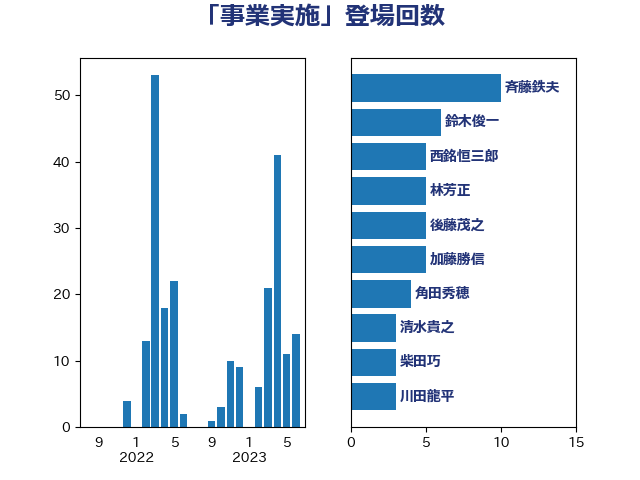

単語「事業実施」

| 斉藤鉄夫 | 公明党 | 10 回 |
| 鈴木俊一 | 自由民主党 | 6 回 |
| 西銘恒三郎 | 自由民主党 | 5 回 |
| 林芳正 | 自由民主党 | 5 回 |
| 後藤茂之 | 自由民主党 | 5 回 |
| 加藤勝信 | 自由民主党 | 5 回 |
| 角田秀穂 | 公明党 | 4 回 |
| 清水貴之 | 日本維新の会 | 3 回 |
| 柴田巧 | 日本維新の会 | 3 回 |
| 川田龍平 | 立憲民主党 | 3 回 |
| 岡田直樹 | 自由民主党 | 3 回 |
| 小倉將信 | 自由民主党 | 3 回 |
| 宮路拓馬 | 自由民主党 | 3 回 |
| 宮崎雅夫 | 自由民主党 | 3 回 |
| 西村康稔 | 自由民主党 | 2 回 |
| 萩生田光一 | 自由民主党 | 2 回 |
| 羽田次郎 | 立憲民主党 | 2 回 |
| 石井苗子 | 日本維新の会 | 2 回 |
| 清水真人 | 自由民主党 | 2 回 |
| 斎藤洋明 | 自由民主党 | 2 回 |
| 岸田文雄 | 自由民主党 | 2 回 |
| 岩渕友 | 日本共産党 | 2 回 |
| 尾崎正直 | 自由民主党 | 2 回 |
| 小沼巧 | 立憲民主党 | 2 回 |
| 古賀篤 | 自由民主党 | 2 回 |
| 丸川珠代 | 自由民主党 | 2 回 |
| 鰐淵洋子 | 公明党 | 1 回 |
| 鬼木誠 | 立憲民主党 | 1 回 |
| 金子恭之 | 自由民主党 | 1 回 |
| 金城泰邦 | 公明党 | 1 回 |
| 野田聖子 | 自由民主党 | 1 回 |
| 野村哲郎 | 自由民主党 | 1 回 |
| 進藤金日子 | 自由民主党 | 1 回 |
| 若松謙維 | 公明党 | 1 回 |
| 芳賀道也 | 国民民主党 | 1 回 |
| 舩後靖彦 | れいわ新選組 | 1 回 |
| 自見はなこ | 自由民主党 | 1 回 |
| 羽生田俊 | 自由民主党 | 1 回 |
| 稲富修二 | 立憲民主党 | 1 回 |
| 秋葉賢也 | 自由民主党 | 1 回 |
| 神津たけし | 立憲民主党 | 1 回 |
| 石井正弘 | 自由民主党 | 1 回 |
| 田村貴昭 | 日本共産党 | 1 回 |
| 渡辺博道 | 自由民主党 | 1 回 |
| 浜田聡 | NHK党 | 1 回 |
| 泉田裕彦 | 自由民主党 | 1 回 |
| 森本真治 | 立憲民主党 | 1 回 |
| 松本剛明 | 自由民主党 | 1 回 |
| 平木大作 | 公明党 | 1 回 |
| 島村大 | 自由民主党 | 1 回 |
| 山本香苗 | 公明党 | 1 回 |
| 山崎誠 | 立憲民主党 | 1 回 |
| 山口壯 | 自由民主党 | 1 回 |
| 奥下剛光 | 日本維新の会 | 1 回 |
| 大岡敏孝 | 自由民主党 | 1 回 |
| 吉井章 | 自由民主党 | 1 回 |
| 古川直季 | 自由民主党 | 1 回 |
| 古川康 | 自由民主党 | 1 回 |
| 中村裕之 | 自由民主党 | 1 回 |
| 中島克仁 | 立憲民主党 | 1 回 |
| 中司宏 | 日本維新の会 | 1 回 |
| 下野六太 | 公明党 | 1 回 |